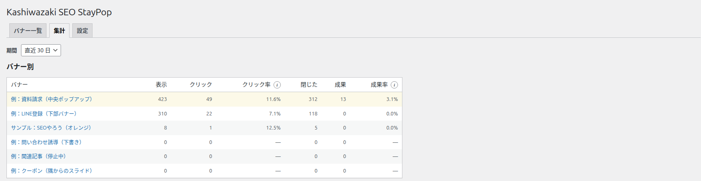
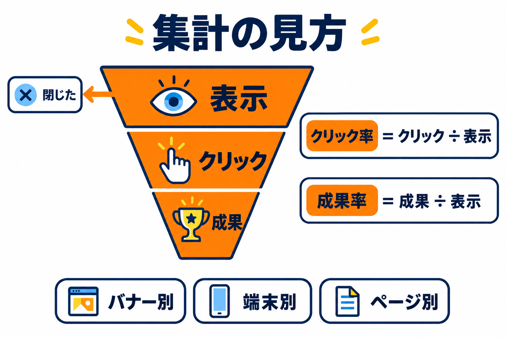
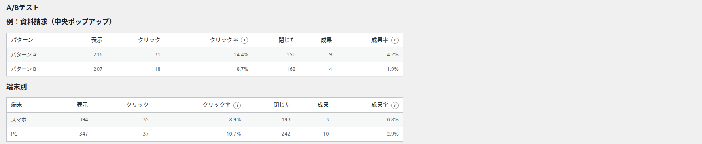
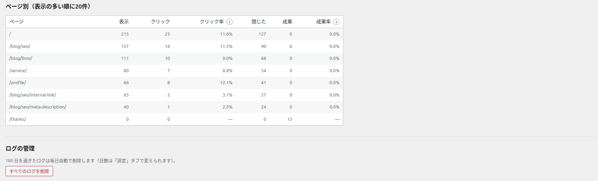
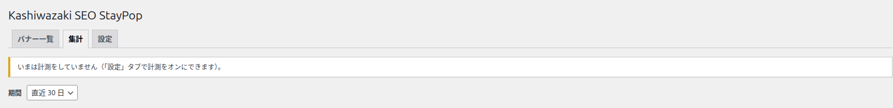

集計タブ
バナーごとの表示・クリック・閉じた・成果の回数と割合を、期間を選んで確かめる画面です。管理者だけが使えます。


画面の地図
| 場所 | 内容 |
|---|---|
| 期間 | 直近 7 日 / 直近 30 日（初期値） / 直近 90 日 から選びます。選ぶとすぐに表示が切り替わります。 |
| バナー別 | バナーごとの結果です。ゴミ箱以外のすべてのバナーが、表示の多い順に並びます（表示されていないバナーも 0 で並びます）。名前をクリックすると編集画面が開きます。 |
| A/Bテスト | A/B テストをしているバナーごとに、パターン A とパターン B の結果を並べます。A/B テストをしているバナーがないときは「A/Bテストをしているバナーはありません（バナーの編集画面の「成果・A/Bテスト」で始められます）。」と表示されます。 |
| 端末別 | PC とスマホの結果です。判断できなかったものは「不明」になります。 |
| ページ別（表示の多い順に20件） | どのページで表示・クリック・成果があったかを、表示の多い順に 20 件まで並べます。 |
| ログの管理 | ログを自動で削除する日数の案内と、「すべてのログを削除」ボタンです。 |
列の意味
| 列 | 意味 |
|---|---|
| 表示 | バナーを表示した回数です。同じ人に2回表示すれば 2 と数えます。 |
| クリック | バナーのボタンが押された回数です（サブリンクは数えません）。 |
| クリック率 | クリック ÷ 表示（%）。表示が 0 のときは「—」です。 |
| 閉じた | バナーが × ・Esc・暗い背景のクリックで閉じられた回数です。 |
| 成果 | バナーを見た（またはクリックした）人が、成果ページに来た回数です（成果ページ）。 |
| 成果率 | 成果 ÷ 表示（%）。表示が 0 のときは「—」です。 |
列の名前の横の (i) にマウスを乗せると、計算のしかたが表示されます。

結果の読み方
- A/B テストは、クリック率と成果率でパターンを比べます。表示の回数が少ないうちの差は、偶然のことがあります。
- ページ別の成果は、成果が数えられたページ（成果ページ）の行に入ります。そのため、成果ページの行は「表示 0・成果 ○」のようになります。
- 完全に削除したバナー（またはゴミ箱のバナー）のログは、「削除したバナー #番号」として残ります。
- ページのパスがわからない記録は「不明」と表示されます。
- 選んだ期間に記録が1件もない表には「この期間のデータはありません。」と表示されます。

記録されないもの
- 設定タブで計測をオフにしている間の表示・クリック・閉じた・成果
- ブラウザで「トラッキング拒否」にしている人（設定でオンのとき）、同意していない人（「同意した人だけ記録する」のとき）
- サイトでテスト表示、編集画面のプレビュー
ログインしている管理者が自分でサイトを見て表示されたバナーも、ふつうの訪問者と同じように記録されます。自分の確認で数字を増やしたくないときは、サイトでテスト表示を使ってください。

ログの管理
「○ 日を過ぎたログは毎日自動で削除します（日数は「設定」タブで変えられます）。」と、いまの日数が表示されます。
1
「すべてのログを削除」を押します。
2
「すべてのログを削除します。集計は0に戻り、元に戻せません。よろしいですか？」と確認が表示されます。
3
「OK」を押すと、すべてのバナーのログが削除され、「ログを ○ 件削除しました。」と表示されます。
削除したログは元に戻せません。バナーごとに選んで消すことはできません。